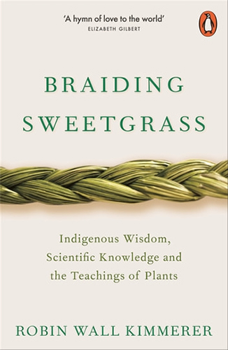
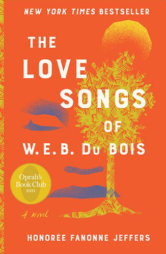
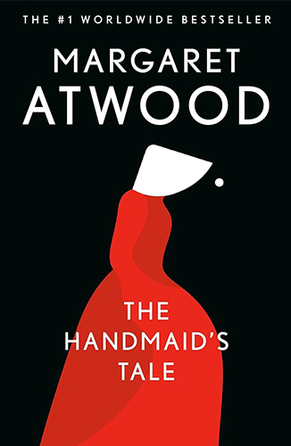
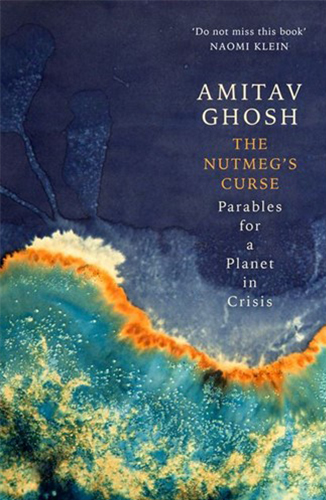

My Favourite Books
Hi there, fellow book lovers 🌈
My name is Anna and this is page that explores a collection of my favourite books. I hope that this helps you find inspiration for your next read.
Here are 5 of my favourite books:
- Braiding Sweetgrass - Robin Wall Kimmerer
- The Love Songs of W.E.B Du Bois - Honorée Fanonne Jeffers
- The Handmaid's Tale - Margaret Atwood
- Parable of the Talents - Octavia Butler
- The Nutmeg's Curse - Amitav Ghosh
Let's dive in!
Braiding Sweetgrass
By Robin Wall Kimmerer
Braiding Sweetgrass is a deeply moving and insightful book that blends Indigenous wisdom with scientific knowledge to explore the intricate relationships between humans and the natural world. Robin Wall Kimmerer, a member of the Citizen Potawatomi Nation and a professor of environmental biology, uses her unique perspective to illuminate the lessons that plants can teach us about ecological sustainability and interconnectedness.
Kimmerer emphasizes the importance of reciprocity, gratitude, and stewardship. She shares stories of how Indigenous cultures honor the gifts of the Earth and maintain a harmonious relationship with nature. Through her essays, readers learn about the cultural significance of plants like sweetgrass, the principles of the Honorable Harvest, and the concept of the gift economy - encouraging readers to see the natural world not just as a resource but as a community of living beings with which we share a mutual relationship.
Read a review from Quinn Luthy on Earth.org
The Love Songs of W.E.B Du Bois
By Honorée Fanonne Jeffers
The Love Songs of W.E.B. Du Bois is a sweeping, multi-generational novel that intertwines the personal and collective histories of an African American family. The story centers on Ailey Pearl Garfield, who grapples with her identity and heritage while navigating the complexities of growing up in the late 20th and early 21st centuries.
The narrative alternates between Ailey's contemporary life and the ancestral stories of her family, tracing their roots back to the Indigenous Creek people, African slaves, and European colonizers. Through these intertwined stories, the novel explores themes of racism, oppression, resilience, and the search for belonging. Jeffers weaves in the works and philosophies of W.E.B. Du Bois, using his ideas about double consciousness and the African American experience as a lens through which to examine Ailey's journey and her family's history. The novel is both a tribute to Du Bois's legacy and a profound exploration of African American life, identity, and culture.
Read a review from Veronica Chambers on The New York Times
The Handmaid's Tale
By Margaret Atwood
The Handmaid's Tale is a dystopian novel set in the near-future totalitarian society of Gilead, where women are stripped of their rights and categorized based on their fertility. The story is narrated by Offred, a Handmaid whose sole purpose is to bear children for the ruling class. Through her eyes, readers witness the oppressive regime's brutal control over women's bodies and lives. The novel explores themes of power, control, gender, and resistance, as Offred navigates her constrained existence while remembering her life before Gilead and contemplating the possibilities of escape and rebellion.
Parable of the Talents
By Octavia Butler

Parable of the Talents is the sequel to Octavia Butler's "Parable of the Sower," continuing the story of Lauren Olamina. Set in a dystopian future America plagued by environmental collapse and social chaos, the novel follows Lauren as she establishes the Earthseed community based on her new religious philosophy. The narrative is interwoven with excerpts from the journals of Lauren's daughter, revealing the struggles and triumphs of the Earthseed community as they confront violent opposition from a Christian fundamentalist movement led by a demagogue. Themes of faith, resilience, community, and the search for a better future are central to this powerful and thought-provoking novel.
Read a short story by Octavia Butler on Seven Stories
The Nutmeg's Curse
By Amitav Ghosh
The Nutmeg's Curse: Parables for a Planet in Crisis by Amitav Ghosh is a non-fiction work that delves into the intertwined histories of colonialism, exploitation, and environmental destruction. Using the story of the nutmeg and its role in the history of global trade and imperialism as a focal point, Ghosh explores the broader impact of colonial practices on the planet's ecological and cultural landscapes. He argues that the ecological crisis we face today is rooted in the same systems of power and domination that have shaped human history for centuries. The book calls for a rethinking of humanity's relationship with nature and a recognition of the interconnectedness of all life on Earth.
Read a review from Deepa Bhasthi on Art Review